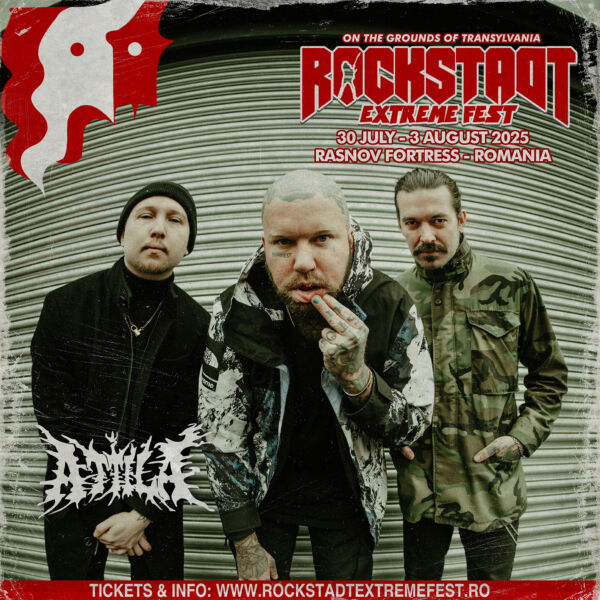
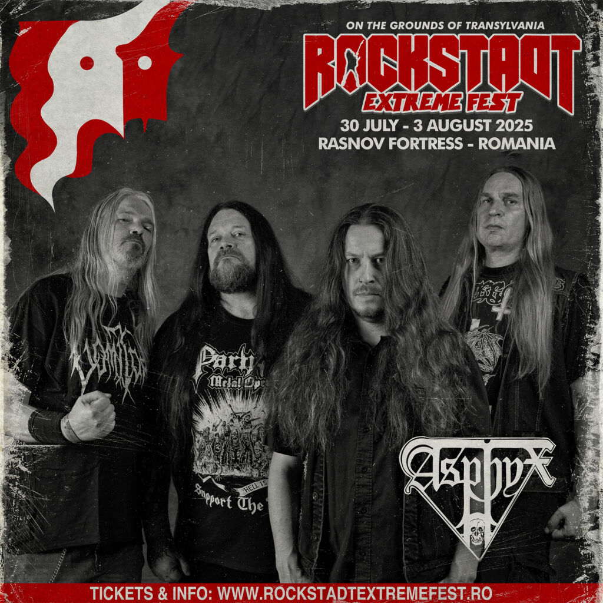
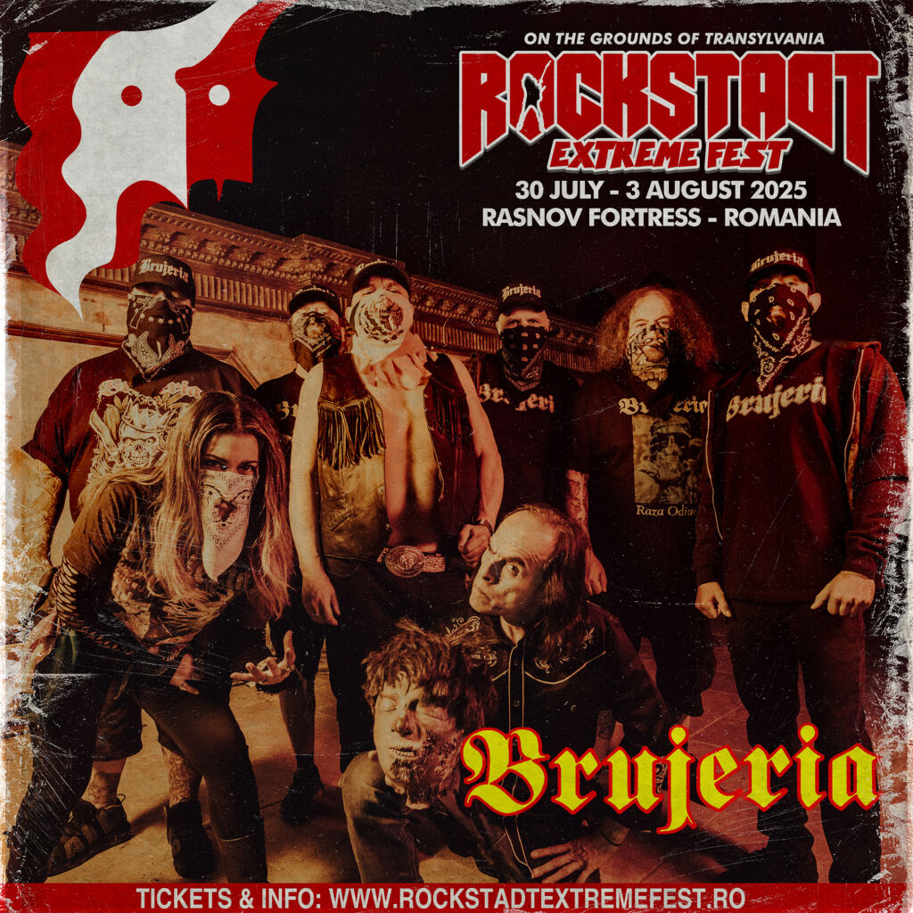
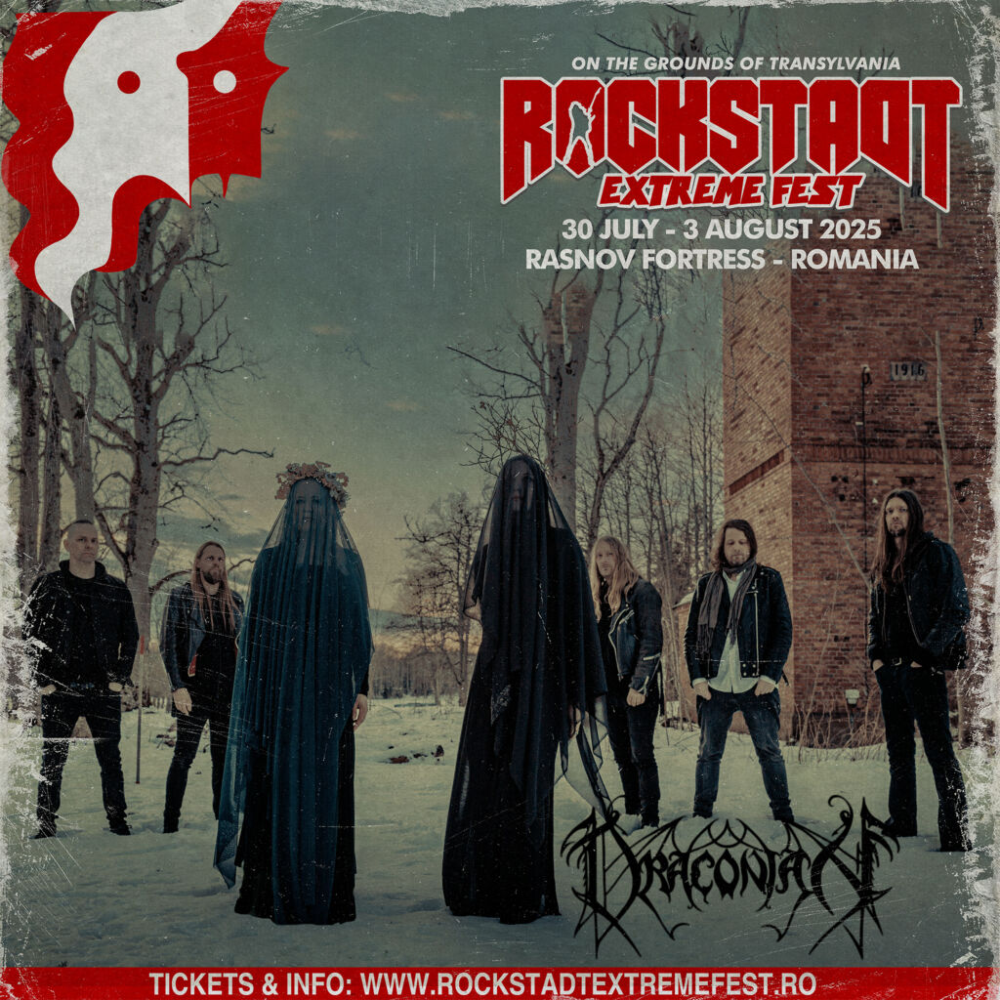
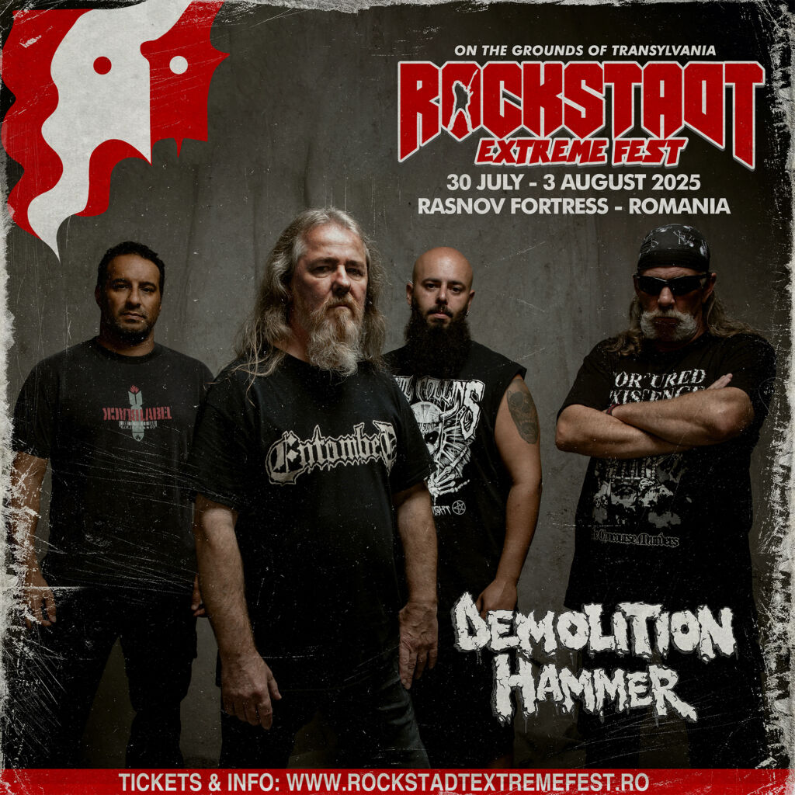
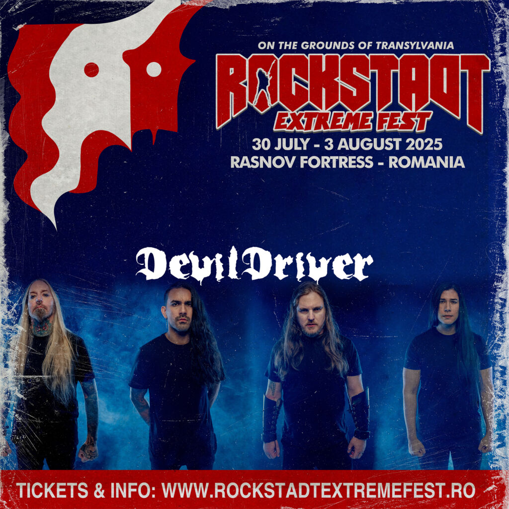
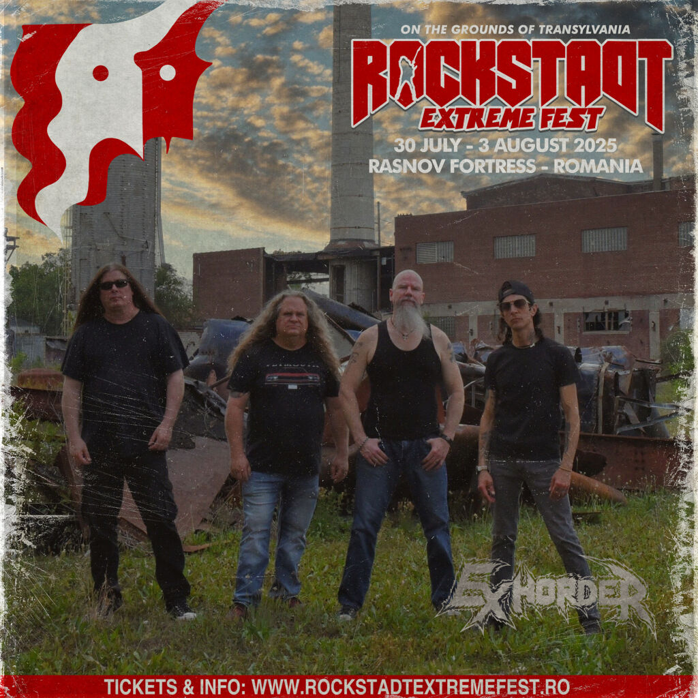
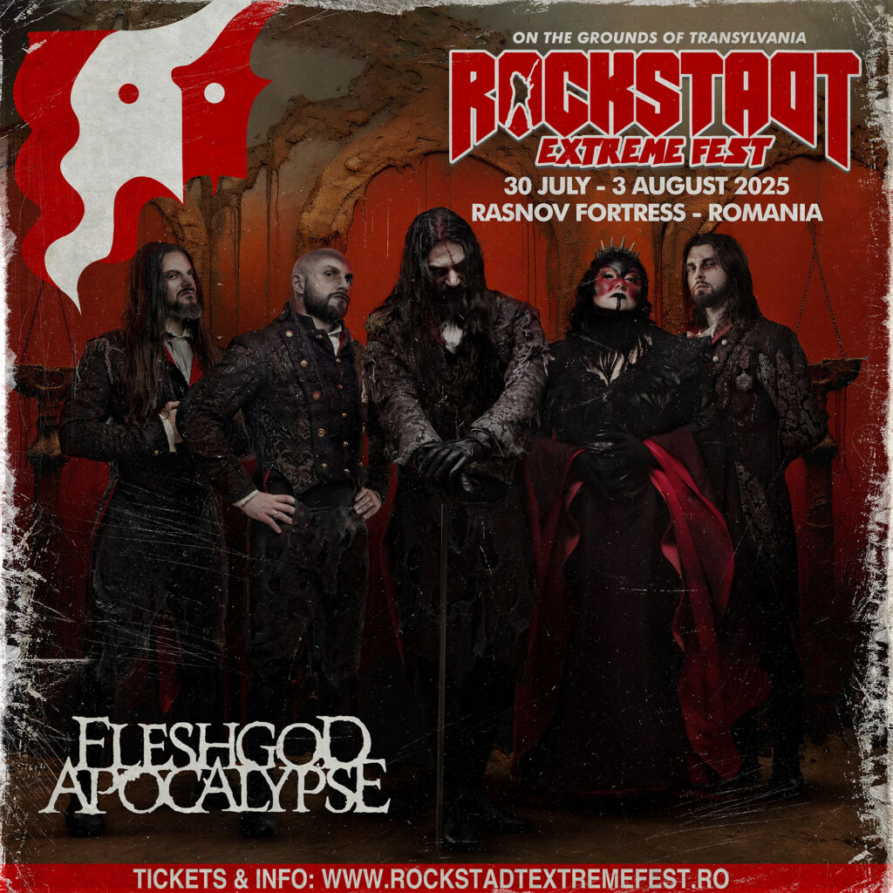
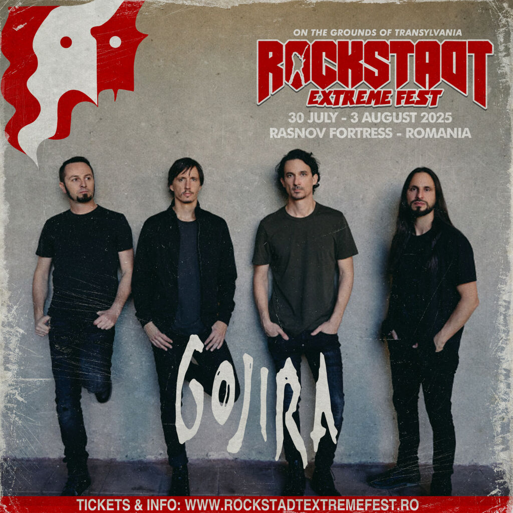
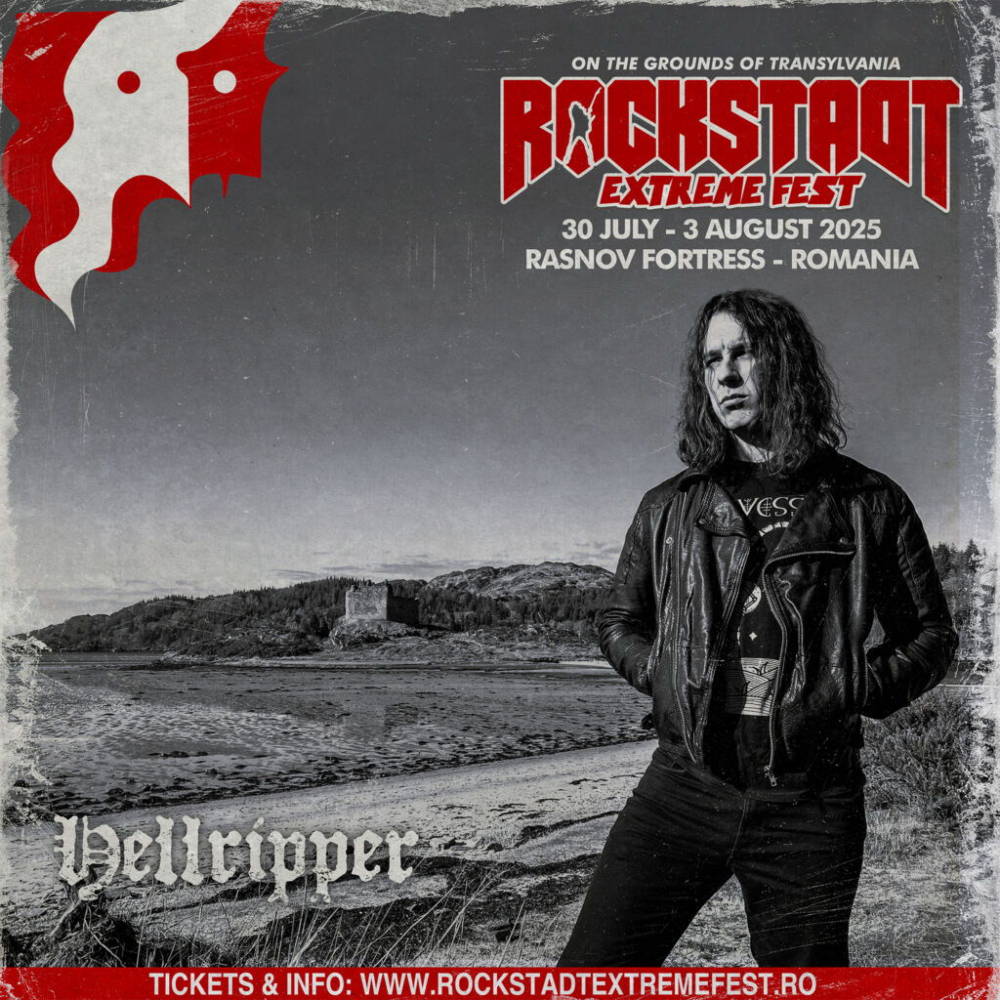

Attila
Death Metal, Heavy Metal, Metalcore
Țara: SUA
Formarea în Atlanta, în 2005, Attila a pornit într-o misiune de a aduce distracția în scena metal și nu s-a uitat niciodată înapoi. Cu fiecare lansare, trupa și-a câștigat faima prin spectacole explozive și atitudine neînfricată pe scenă.
Asphyx
Death Metal, Doom Metal
Țara: Olanda
Asphyx combină intensitatea death metalului cu atmosfera apăsătoare a doom-ului. Cu o carieră de peste trei decenii, ei rămân o forță neînvinsă în metalul extrem.
Brujeria
Death Metal, Grindcore
Țara: Mexic
Brujeria este cunoscută pentru abordarea lor violentă și provocatoare, cu teme politice și sociale intens discutate. Muzica lor este un amestec brut de grindcore și death metal.
Draconian
Gothic Metal, Doom Metal
Țara: Suedia
Cu influențe puternice din gothic și doom metal, Draconian creează o atmosferă melancolică și captivantă. Versurile lor reflectă adesea teme întunecate și introspective.
Demolition Hammer
Thrash Metal, Speed Metal
Țara: SUA
Demolition Hammer este o trupă legendară de thrash metal, cunoscută pentru riffurile rapide și energia inepuizabilă din show-urile lor live.
DevilDriver
Death Metal, Groove Metal
Țara: SUA
DevilDriver este o trupă din California care a redefinit groove metalul modern. Cu un sunet intens și versuri captivante, ei continuă să atragă fani din întreaga lume.
Exhorder
Sludge Metal, Thrash Metal
Țara: SUA
Originară din Louisiana, Exhorder este considerată pionieră a groove metalului. Energia și brutalitatea lor sunt neclintite chiar și după decenii de activitate.
Fleshgod Apocalypse
Symphonic Death Metal
Țara: Italia
Cu un amestec unic de death metal și orchestră simfonică, Fleshgod Apocalypse aduce o dimensiune epică scenei metal extrem.
Gojira
Progressive Metal
Țara: Franța
Gojira este cunoscută pentru mesajele ecologice și sunetul lor progresiv unic. Cu fiecare album, trupa continuă să inoveze și să inspire.
Hellripper
Black/Speed Metal
Țara: Marea Britanie
Hellripper este o forță emergentă în scena black și speed metalului, oferind un sunet rapid și intens ce reamintește de legendele anilor '80.
